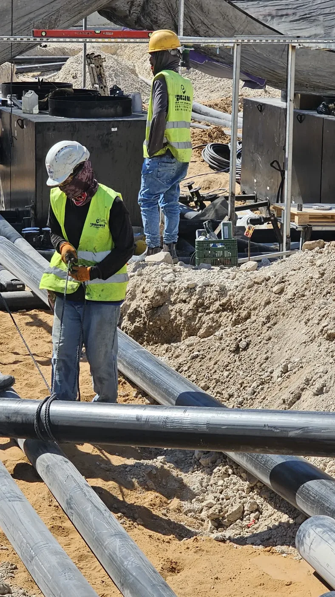

- ראשי
- תחומי פעילות
- עבודות צנרת דלק
עבודות צנרת דלק, אטומות ומתועדות
צנרת דלק ואדים, צנרת בדופן כפולה ופיברגלאס, חיבורים למיכלים ולמשאבות בתוך שוחות אטומות, מערכות מילוי ושסתומים, ובדיקות לחץ ואטימות עם תיעוד מלא.

הצנרת היא המקום שבו תחנה דולפת
רוב הדליפות בתחנות דלק לא מתחילות במיכל אלא בצנרת ובחיבורים: קטע שנשחק, אוגן שלא נאטם, חיבור שנסגר בבטון בלי שנבדק. לכן אנחנו מתייחסים לצנרת כאל המערכת הקריטית של התחנה: צינור בתוך צינור, חיבורים רק בתוך שוחות אטומות, וכל קטע עובר בדיקת לחץ ואטימות לפני שהוא נסגר.
החברה התחילה ב־1972 כקבלן צנרת ותשתיות, וזה עדיין הבסיס של כל מה שאנחנו עושים. חיבורי צנרת שביצענו לפני עשרות שנים עדיין אטומים ופועלים.
כל סוגי צנרת הדלק
- צנרת דלק ואדיםקווי יניקה, מילוי ואוורור מהמיכלים ועד המשאבות.
- צנרת בדופן כפולהצינור בתוך צינור עם ניטור החלל שביניהם וגילוי דליפות.
- צנרת פיברגלאסצנרת פיברגלאס להולכת דלק, כפי שבוצע בתחנת נובר באשדוד.
- צנרת מישוב אדים Stage IIתוואי צנרת אדים מהמשאבות ועד המיכל.
- חיבורים בשוחות אטומותחיבורי צנרת רק בתוך שוחות אטומות מתחת למשאבות ומעל המיכלים.
- מערכות מילוי ושסתומיםשוקת מילוי, שסתומים, אוגנים ומערכות מילוי בדופן כפולה.
- צנרת הזנה לגנרטוריםקווי הזנה בתצורת N+1 לגנרטורי חירום בחוות שרתים.
- בדיקות ותיעודבדיקות לחץ ואטימות לכל קטע, עם תיעוד שנמסר ללקוח.
מהתוואי ועד הבדיקה, בחמישה שלבים
- 01תכנון תוואי
תכנון תוואי הצנרת מול תוכניות התחנה, המיכלים והמשאבות.
- 02חפירת תעלות
תעלות בעומק ובשיפועים הנדרשים, עם מצע חול.
- 03הנחה וחיבור
הנחת הצנרת, חיבורים בתוך שוחות אטומות, מערכות מילוי ושסתומים.
- 04בדיקות לחץ ואטימות
בדיקה של כל קטע לפני הכיסוי, עם תיעוד מלא.
- 05כיסוי ומסירה
כיסוי מבוקר, יציקה ומסירת תיעוד הבדיקות.
נובר אשדוד: צנרת פיברגלאס ומערכת מילוי בדופן כפולה
במסגרת ההקמה מחדש של תחנת נובר באשדוד הנחנו צנרת פיברגלאס להולכת דלק, מערכת מישוב אדים (Stage II), מערכת מילוי בדופן כפולה ושוקת מילוי תקנית (5 גלון). בתחנת גל הראשונים באשדוד, בביצוע כעת, מותקנת צנרת חדשה למישוב אדים ושוחות מלבניות שמונעות דליפת דלק לקרקע.
אותה צנרת, בקנה מידה גדול יותר, מזינה גם גנרטורים בחוות שרתים: קווי הזנה בתצורת N+1 ממיכלי האחסון ועד מיכלי היום. לכל הפרויקטים
צנרת מהשטח
שאלות על צנרת דלק
מה ההבדל בין צנרת חד־קירית לצנרת בדופן כפולה?
בצנרת בדופן כפולה קו הדלק עובר בתוך צינור מעטפת, והחלל שביניהם מנוטר. דליפה מהצינור הפנימי נעצרת במעטפת ומתגלה, במקום להגיע לקרקע.
האם אפשר להחליף רק את הצנרת בלי להחליף מיכלים?
כן, כשהמיכלים תקינים. פותחים את תוואי הצנרת, מחליפים לצנרת בדופן כפולה עם שוחות אטומות, ובודקים אטימות לפני הסגירה.
מה מקבלים בסיום העבודה?
תיעוד של בדיקות הלחץ והאטימות לכל קטע צנרת, שנדרש לרישוי ומשמש את התחנה לאורך השנים.
צריכים צנרת חדשה? נבדוק את התוואי
השאירו פרטים ונחזור אליכם לשיחה קצרה. לפי הצורך נגיע לתחנה לבדיקת התוואי לפני הצעת המחיר. או ישירות למשרד: 08-622-9307